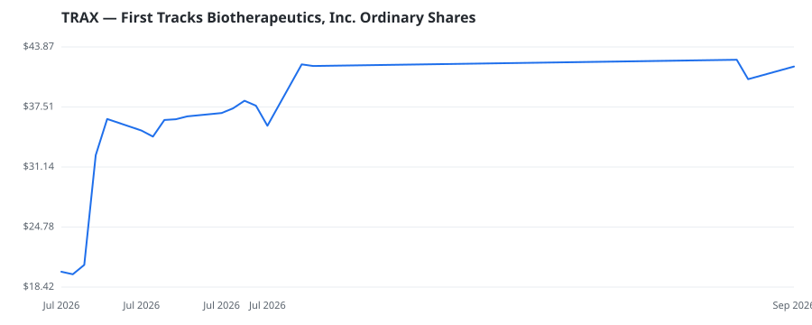

bullish · bearish · n/a — dots: price>SMA10 · SMA10>SMA50 · SMA50>SMA200 · up>down volume (20d)
Pharmaceuticals & Biotech · small cap

First Tracks Biotherapeutics Inc is a clinical-stage biotechnology company focused on delivering immunology therapeutics for autoimmune and inflammatory diseases. Its clinical-stage pipeline includes rosnilimab, a selective pathogenic T cell depleter, for which it completed a Phase 2b trial for the treatment of moderate-to-severe rheumatoid arthritis (RA), ANB033, a CD122 antagonist, in a Phase 1b trial for celiac disease (CeD) and eosinophilic esophagitis (EoE), and ANB101, a BDCA2 modulator, in a Phase 1a trial. The company operates in one reportable segment focused on research and developme PHARMACEUTICAL PREPARATIONS
🛒 Newly buying: Trails Edge Capital Partners, LP (+30%, 4.8% of book) · TCG Crossover Management, LLC (+154%, 1.4% of book) · Opaleye Management Inc. (+32%, 0.1% of book)
| Fund | Fund alpha vs SPY | Position | % of book |
|---|---|---|---|
| TCG Crossover Management, LLC | +154% | $58M | 1.4% |
| Trails Edge Capital Partners, LP | +30% | $30M | 4.8% |
| Opaleye Management Inc. | +32% | $1M | 0.1% |
| CRCM LP | +52% | $1M | 0.5% |
Hedge data: SEC EDGAR 13F · ranked funds beat SPY in >50% of their quarters · fund alpha = mirror-portfolio return minus SPY.